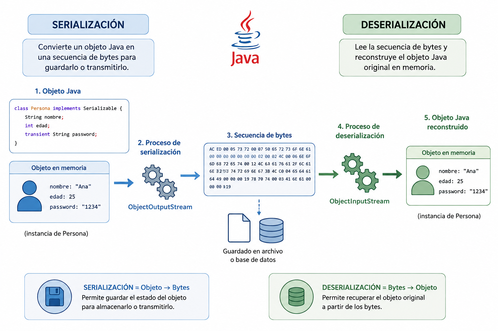

Serialización de objetos¶
La serialización de objetos en Java es el proceso de convertir un objeto Java en una secuencia de bytes, con el fin de guardarlo en un archivo o base de datos.
La deserialización es el proceso inverso: leer esos bytes y reconstruir el objeto.

Dónde guardar los ejemplos
SETUP_IDE SETUP_PAQUETES SETUP_CARPETAS
Los ejemplos de serialización binaria no necesitan librerías externas, por lo que deben realizarse en el proyecto Ficheros:
- Guarda
Persona.kt,Ejemplo_guardar_persona.ktyEjemplo_leer_persona.kten el paqueteformatos, dentro desrc/main/kotlin. - Los archivos serializados, como
persona.obj, se guardarán en la carpetadocumentos, situada en la raíz del proyecto.
Si necesitas revisar la estructura completa, consulta 🧰 Entorno y ubicación de los ejemplos.
Para que un objeto pueda ser serializado es necesario que su clase y todo su contenido implementen la interfaz Serializable. Se trata de una interfaz sin métodos, porque el único objetivo de la interfaz es actuar de marcador para indicar en la máquina virtual qué clases se pueden serializar y cuáles no.
Todas las clases equivalentes a los tipos básicos ya implementan Serializable.
También implementan esta interfaz la clase String y todos los contenedores y
los objetos Array. La seriación de colecciones depende en último término de los
elementos contenidos. Si éstos son seriables, la colección también lo será.
En caso de que la clase del objeto que se intente serializar, o las de alguno de los objetos que contenga, no implementaran la interfaz Serializable, se lanzaría una excepción de tipos NotSerializableException , impidiendo el almacenamiento.
Kotlin no proporciona ninguna librería adicional para serializar objetos Java. Utiliza exactamente el mismo sistema de serialización binaria de Java, ya que es 100% compatible.
Clases y herramientas que se utilizan
| Herramienta | Uso principal |
|---|---|
| java.io.Serializable | Marca que un objeto es serializable |
| ObjectOutputStream | Serializa y escribe un objeto |
| ObjectInputStream | Lee un objeto serializado |
| transient | Excluye atributos de la serialización |
| ReadObject | Lee y reconstruye un objeto binario |
| WriteObject | Guarda un objeto como binario |
Nota
La serialización en Java sigue necesitando usar las clases de java.io (ObjectOutputStream, ObjectInputStream) porque java.nio no proporciona soporte directo para serialización de objetos.
Con java.nio.file.Files y Paths puedes escribir directamente un ByteArray generado con la serialización tradicional.
Los Streams ObjectInputStream y ObjectOutputStream añaden a cualquier otro Stream la capacidad de seriar cualquier objeto Serializable. El stream de salida dispondrá del método writeObject y el stream de entrada, el método de lectura readObject.
El método readObject sólo permite recuperar instancias que sean de la misma clase que la que se guardó. De lo contrario, se lanzaría una excepción de tipos ClassCastException. Además, es necesario que la aplicación disponga del código compilado de la clase; si no fuera así, la excepción lanzada sería ClassNotFoundException.
Este ejercicio completo se divide en tres partes que deben entenderse como un único proceso: definir un objeto serializable, guardarlo en un archivo y recuperarlo después desde ese mismo archivo.
- Primero se crea la clase
Persona, que representa la información que queremos almacenar. - Después se serializa un objeto de esa clase en un fichero binario.
- Finalmente se deserializa el contenido para reconstruir el objeto original y comprobar que conserva sus datos.
La finalidad del ejercicio es comprender el ciclo completo de serialización y deserialización de objetos en Kotlin usando las clases de java.io.
Los pasos para serializar un objeto Java (Kotlin) son los siguientes:
🖥️ 1. Persona.kt: Crear una clase serializable
- Implementa
Serializablepara habilitar la serializacion binaria del objeto.
🖥️ 2. Ejemplo_guardar_persona.kt: Serializar un objeto a un archivo
En esta segunda parte se crea una instancia de Persona y se guarda en disco mediante serialización binaria.
import java.io.ObjectOutputStream
import java.nio.file.Files
import java.nio.file.Paths
fun main() {
val persona = Persona("Alicia", 30)// (4)!
val path = Paths.get("documentos/persona.obj") // (1)!
val objectOut = ObjectOutputStream(Files.newOutputStream(path)) // (2)!
objectOut.writeObject(persona) // (3)!
objectOut.close()
println("Objeto serializado correctamente.")
}
- Define la ruta del fichero binario donde se guardara el objeto serializado.
- Crea un
ObjectOutputStreamsobre el fichero para escribir objetos. - Serializa la instancia
personay la escribe en el flujo binario. - Construye un objeto
Personacon unos valores concretos.
🖥️ 3. Ejemplo_leer_persona.kt: Deserializar un objeto desde un archivo
En esta tercera parte se recupera el objeto almacenado en el paso anterior y se reconstruye en memoria.
Este paso permite ver que la deserialización reconstruye el objeto con su estado original, siempre que la clase siga siendo compatible con la versión con la que fue serializado.
import java.io.ObjectInputStream
import java.nio.file.Paths
import java.nio.file.Files
fun main() {
val path = Paths.get("documentos/persona.obj") // (1)!
val objectIn = ObjectInputStream(Files.newInputStream(path)) // (2)!
val persona = objectIn.readObject() as Persona // (3)!
objectIn.close()
println("Objeto deserializado:")
println("Nombre: ${persona.nombre}, Edad: ${persona.edad}")
}
- Localiza el fichero que contiene el objeto previamente serializado.
- Abre un
ObjectInputStreampara leer el contenido binario del fichero. - Deserializa con
readObject()y convierte el resultado al tipoPersona.
@Transient
Si hay atributos que no quieres guardar, usa el modificador @Transient
Los atributos marcados como @Transient no se serializan, por lo que al deserializar el objeto el campo aparece con su valor por defecto, siendo null en el caso de tipos objeto.
class Usuario(
val nombre: String,
@Transient val clave: String
) : Serializable
Recomendación: serialVersionUID
serialVersionUID garantiza la compatibilidad de una clase serializable durante la deserialización, evitando errores tanto cuando se modifica la definición de la clase como cuando el mismo código se ejecuta en distintos entornos o versiones de Java.
Si no se define explícitamente, Java genera automáticamente un serialVersionUID que se guarda junto con el nombre del paquete y de la clase en el fichero serializado. Este identificador puede variar entre compilaciones, entornos o versiones de Java, lo que puede provocar errores al compartir los ficheros.
Para evitarlo, es recomendable definir manualmente el serialVersionUID, asegurando la compatibilidad y permitiendo compartir objetos serializados incluso entre proyectos distintos o entre Java y Kotlin.
La clase persona.kt quedaría así:
import java.io.Serializable
class Persona(val nombre: String, val edad: Int) : Serializable
{
companion object {
private const val serialVersionUID: Long = 1
}
}
🧠 Comprueba tu comprensión
Si serializas hoy un objeto Persona y mañana cambias la clase (por ejemplo, añadiendo o modificando atributos), ¿qué papel tienen Serializable, serialVersionUID y readObject() para poder recuperar ese objeto sin errores?
Ver respuesta
Serializableindica que la clase puede convertirse a bytes y recuperarse después.readObject()reconstruye el objeto desde el fichero binario y exige que la clase exista y sea compatible.serialVersionUIDpermite controlar la compatibilidad entre versiones de la clase.
Si el identificador no coincide entre lo que se guardó y la clase actual, puede aparecer una InvalidClassException. Por eso es recomendable definir serialVersionUID explícitamente cuando prevés evolución de la clase o intercambio de ficheros entre proyectos/entornos.